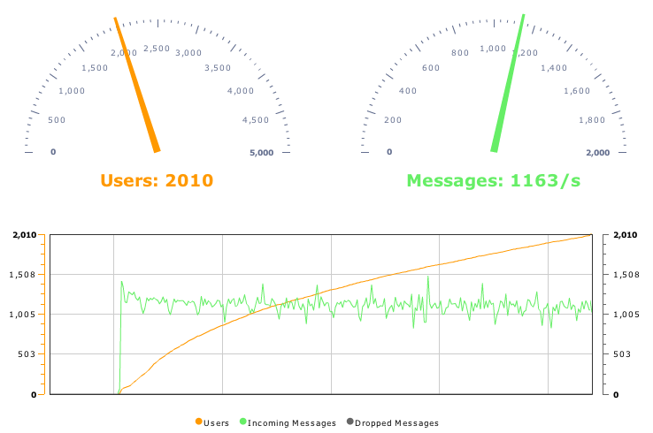

The dashboard allows you to easily monitor the number of users on the chat server as well as the number of messages
being processed per second. The current statistics are displayed with dials, and the trend over time is shown in a
graph. The dashboard updates itself automatically. The screenshot below was taken during a benchmark test and shows
the dashboard in action.
